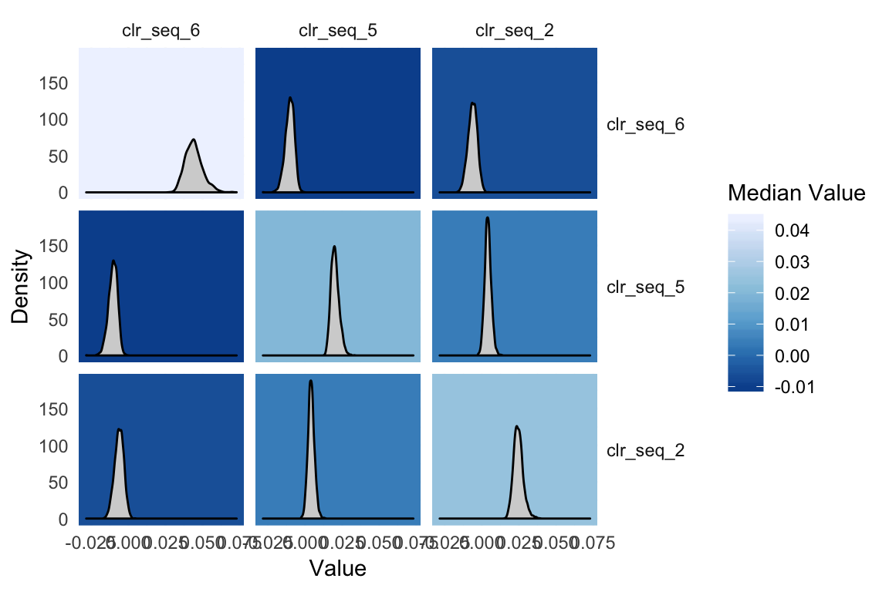

Non-linear models with stray::basset
Justin Silverman
non-linear-models.RmdIf you have not already done so I would read through the pibble vignette before this one.
stray::basset, the model
Stray can be used for non-linear modeling. Here we are going to go through one such model which is based on multivariate Gaussian processes. As Gaussian processes are a type of lazy learner, I have named this model after a lazy dog: a Basset Hound. Hence this model is called basset. The basset model can be written as \[ \begin{align} Y_j & \sim \text{Multinomial}\left(\pi_j \right) \\ \pi_j & = \phi^{-1}(\eta_j) \\ \eta &\sim N(\Lambda[X], \Sigma, I_N) \\ \Lambda[X] &\sim \textsf{GP}(\Theta[X], \Sigma, \Gamma[X]) \\ \Sigma &\sim W^{-1}(\Xi, \upsilon) \end{align} \] where we now label quantities interpreted as function with square brackets. In particular, we use the notation that \(\Lambda[X]\) is a function that maps am \(Q \times N\) matrix of covariates \(X\) to a matrix \(\eta\). \(\Lambda\) can be interpreted as a smooth function that relates covariates \(X\) to composition \(\eta\) in a potentially non-linear manner. \(\Theta[X]\) is the mean function evaluated at \(X\), \(\Gamma[X]\) is a covariance matrix (or gram matrix) formed by evaluating a positive semi-definite kernel function \(K\) at each set of points \(i\) and \(j\), i.e., \(\Gamma_{ij} = K(X_i, X_j)\). Many different possible kernel functions makes this a very flexible and powerful model.
Non-linear time-series modeling
To demonstrate basset I am going to reanalyze the mallard1 dataset from Silverman et al. (2018) which is provided as a phyloseq object in stray. This dataset features 4 artificial gut vessels sampled both daily and hourly for 1 month with many technical replicates.
To accord with prior analyses (and to make it easy to visualize results) I am going to just analyze those bacterial families that are frequently observed. Note: the full dataset (at the sequence variant level without preprocessing) is available if you run data(mallard). For simplicity we will just look at samples from vessel 12.
library(stray)
library(phyloseq)
library(dplyr)
library(driver)
library(ggplot2)
data(mallard_family)
# Just take vessel 1
ps <- prune_samples(sample_data(ps)$Vessel==1, ps)
# Just take hourly samples
ps <- prune_samples((sample_data(ps)$time > "2015-11-20 15:00:00 UTC") &
(sample_data(ps)$time < "2015-11-25 16:00:00 UTC"), ps)
# Order samples - to make plotting easy later
o <- order(sample_data(ps)$time)
otu_table(ps) <- otu_table(ps)[o,]
sample_data(ps) <- sample_data(ps)[o,]
# Extract Data / dimensions from Phyloseq object
Y <- t(as(otu_table(ps), "matrix"))
rownames(Y) <- taxa_names(ps)
D <- ntaxa(ps)
N <- nrow(sample_data(ps))
# X in hours
X <- as.numeric(sample_data(ps)$time)
X <- t((X-min(X)) / 3600)The function basset is a wrapper around some stray internals that make fitting the above model easy. basset is patterned after the function pibble but requires that Theta and Gamma be given as matrix functions rather than as matrices. That is Theta must be a function that given X outputs a \(D-1 \times N\) matrix (just like you would give to pibble) and Gamma must be a function that given X outputs a \(N \times N\) covariance matrix (e.g., covariance over the samples). There are a few kernel functions that meet the requirements for Gamma in stray already. Here we will use a Squared Exponential (SE) kernel for Gamma and will set Theta to be the zero function. The SE kernel will give us non-linear smoothing of the observed time-series.
Important Note: Currently, Theta must output a matrix represented in the default coordinate system (\(ALR_D\)). This may be generalized in the future.
Here we will just specify the Kernel parameters manually, more generally these parameters can be chosen by cross-validation.
# Specify Priors
Gamma <- function(X) SE(X, sigma=5, rho=10) # Create partial function
Theta <- function(X) matrix(0, D-1, ncol(X))
upsilon <- D-1+3
Xi <- matrix(.4, D-1, D-1)
diag(Xi) <- 1
# Now fit the model
fit <- stray::basset(Y, X, upsilon, Theta, Gamma, Xi)It turns out that basset is really just creating a pibblefit object that is a little special because it represents a posterior over non-linear functions. The benefit of this is that many of the methods available for pibblefit objects work for bassetfit objects. For example, we can use the same transformation methods:
fit.clr <- to_clr(fit)
# Plot Sigma in CLR
plot(fit.clr, par="Sigma", focus.coord=c("clr_seq_6", "clr_seq_5", "clr_seq_2"))
Really basset shows its power when you use it to smooth.
# predict not just missing days but also forecast into future
X_predict <- t(1:(max(X)))
predicted <- predict(fit.clr, X_predict, jitter=1) Now I am going to create a visual that shows the observed data in CLR coordinates (to do that I will need to add a pseudo-count) along with the smoothed estimates.
family_names <- as(tax_table(ps)[,"Family"], "vector")
Y_clr_tidy <- clr_array(Y+0.65, parts = 1) %>%
gather_array(mean, coord, sample) %>%
mutate(time = X[1,sample],
coord = paste0("CLR(", family_names[coord],")"))
predicted_tidy <- gather_array(predicted, val, coord, sample, iter) %>%
mutate(time = X_predict[1,sample]) %>%
filter(!is.na(val)) %>%
group_by(time, coord) %>%
summarise_posterior(val, na.rm=TRUE) %>%
ungroup() %>%
mutate(coord = paste0("CLR(", family_names[coord],")"))
ggplot(predicted_tidy, aes(x = time, y=mean)) +
geom_ribbon(aes(ymin=p2.5, ymax=p97.5), fill="darkgrey", alpha=0.5) +
geom_ribbon(aes(ymin=p25, ymax=p75), fill="darkgrey", alpha=0.9)+
geom_line(color="blue") +
geom_point(data = Y_clr_tidy, alpha=0.5) +
facet_wrap(~coord, scales="free_y") +
theme_minimal()+
theme(axis.title.y = element_blank(),
axis.title.x = element_blank(),
axis.text.x = element_text(angle=45))
References
Silverman, Justin D, Heather Durand, Rachael J Bloom, Sayan Mukherjee, and Lawrence A David. 2018. “Dynamic Linear Models Guide Design and Analysis of Microbiota Studies Within Artificial Human Guts.” bioRxiv. Cold Spring Harbor Laboratory. doi:10.1101/306597.
I have a long history of coming up with ridiculous names for statistical models and software.↩
In the future I may make a vignette discussing how we can model all the vessels jointly using basset. Note: it’s just a different kernel function that also relates the covariance between samples as a function of which vessel they were taken from.↩